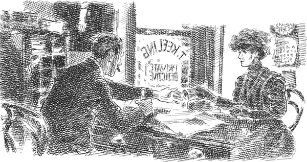
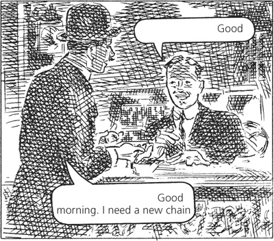
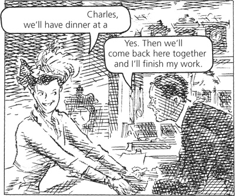
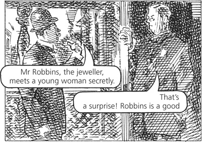
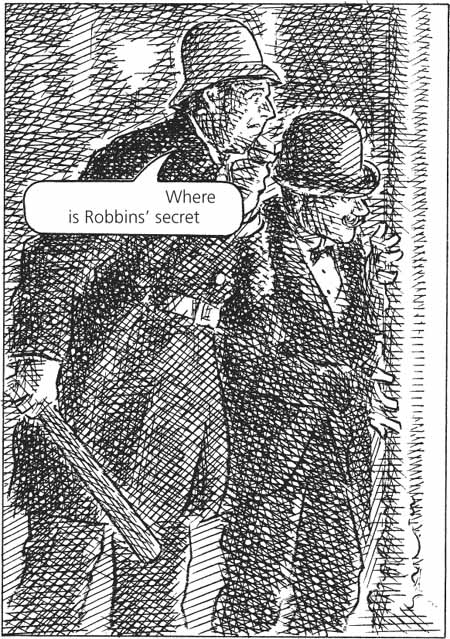
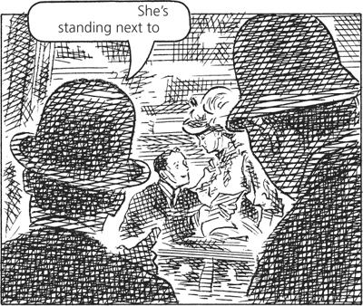
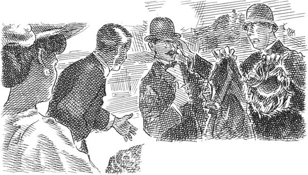
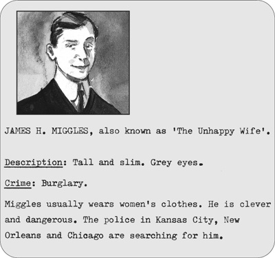

4
Listen to Part 1:

Người vợ của anh chàng bán đồ trang sức
Ông Thomas Keeling muốn trở thành một thám tử tư. Có rất nhiều người cần đến thám tử tư. Đôi khi, một thương nhân muốn ai đó điều tra nhân viên của mình. Liệu nhân viên đó có ăn trộm tiền của ông ta không? Đôi khi, một người vợ muốn ai đó theo dõi chồng mình. Liệu anh ta có ngoại tình với người phụ nữ khác không? Cả thương nhân lẫn người vợ đều cần thám tử tư. Mọi người đều cần ông Thomas Keeling!
Ông Keeling là một người đàn ông điềm đạm và nghiêm túc. Ông muốn hoàn thành tốt công việc của mình. Ông đã đọc rất nhiều sách về các thám tử nổi tiếng. Ông đã tiết kiệm được 900 đô la. Ông sẽ bắt đầu kinh doanh.
Một ngày nọ, ông Keeling đến Houston, Texas. Ông thuê một văn phòng nhỏ tại một con phố yên tĩnh. Ông treo một tấm biển trước văn phòng và chờ đợi khách hàng đầu tiên.
Trong ba ngày, ông Keeling ngồi trong văn phòng đọc các câu chuyện về điều tra phá án. Nhưng đến ngày thứ tư, cuối cùng một khách hàng cũng bước lên cầu thang đến văn phòng ông.
Ông Keeling quan sát kỹ khách hàng của mình. Ông thấy một phụ nữ trẻ. Cô ta khoảng 25 tuổi. Cô ta cao và gầy. Cô ta mặc một bộ đồ đen sang trọng. Cô ta đội mũ đen. Một tấm mạng đen che kín khuôn mặt cô ta.
– Chào buổi chiều, thưa bà, – ông Keeling nói. – Mời bà ngồi.
Người phụ nữ nhấc tấm mạng che mặt lên.
Khuôn mặt cô ta nhỏ nhắn và có đôi mắt xám to tròn.
Người phụ nữ nói bằng giọng buồn và nhẹ nhàng.
Listen to Part 2:
– Ngài là người lạ ở thành phố này, thưa ngài, – cô ta nói. – Đó là lý do tôi đến đây. Tôi có một vấn đề. Tôi không thể nói về vấn đề này với bạn bè. Ông Keeling, tôi muốn ngài theo dõi chồng tôi.
– Tôi muốn nghe bà kể về vấn đề này, – ông Keeling nói.

– Tôi tên là bà Robbins, – người phụ nữ nói. – Chồng tôi là một người đàn ông nổi tiếng trong thành phố này. Ông ấy có một cửa hàng trang sức nhỏ trên phố Main. Chúng tôi đã kết hôn 5 năm. Nhưng anh ấy không còn yêu tôi nữa. Anh ấy đã bí mật gặp gỡ một người phụ nữ khác.
Ông Keeling chăm chú lắng nghe. Ông không nói gì.
– Tôi muốn ngài theo dõi chồng tôi, – bà Robbins lặp lại. – Tôi muốn ngài kể cho tôi mọi hành động của anh ấy. Tôi sẽ đến văn phòng của ngài hai ngày một lần. Ngài sẽ báo cáo lại cho tôi. Tôi sẽ trả tiền xứng đáng cho ngài.
Cô ta đưa cho ông 20 đô la.
Ông Keeling nhận tiền.
– Tôi sẽ giúp bà, bà Robbins, – ông nói. – Xin bà đến đây vào ngày kia, khoảng bốn giờ chiều. Tôi sẽ đưa bà báo cáo đầu tiên. Chào bà.
_____
Listen to Part 3:
Ngày hôm sau, vị thám tử bắt đầu điều tra. Ông đến cửa hàng trang sức trên phố Main. Ông vào cửa hàng và quan sát xung quanh. Người chủ cửa hàng đang đứng sau quầy. Người chủ cửa hàng trang sức tên là Robbins, khoảng 35 tuổi. Cửa hàng của ông ta nhỏ nhưng trên kệ có bày bán những viên kim cương lấp lánh, những chiếc vòng cổ đắt tiền và những chiếc đồng hồ cao cấp.

Sau đó, vị thám tử đứng trên đường đợi gần cửa hàng trang sức trong nhiều giờ. Cuối cùng, một chuyện đã xảy ra.
Một cô gái trẻ đi dọc theo con phố và vào cửa hàng. Cô ta có mái tóc đen và đôi mắt đen huyền. Cô ta mặc quần áo sặc sỡ và rất thời trang.
Ông Keeling tiến lại gần cửa hàng và nhìn qua cửa sổ. Cô gái trẻ đi đến quầy. Cô ta nói gì đó với ông Robbins. Ông ta ngừng làm việc và cả hai nói chuyện thầm thì trong vài phút. Sau đó, ông chủ tiệm trang sức đưa cho cô gái một số tiền. Một lát sau, cô ta ra khỏi cửa hàng và đi nhanh xuống phố.
_____
Bốn giờ chiều ngày hôm sau, khách hàng của ông Keeling đến văn phòng của ông.
– Ngài đã phát hiện ra điều gì về chồng tôi? – cô ta hỏi.
– Tôi thấy một người phụ nữ vào cửa hàng trang sức, – ông Keeling nói. – Chồng bà đã đưa tiền cho cô ta. Cô ta là một cô gái trẻ mắt đen. Tóc cô ta đen và quần áo rất thời trang.
– Chính là cô ta! – người phụ nữ nói. – Charles đưa tiền cho cô ta! Thật kinh khủng!
Listen to Part 4:
Người phụ nữ đưa khăn tay lên mắt. Cô ta khóc.
– Bà Robbins, giờ bà muốn tôi làm gì? – vị thám tử hỏi. – Bà có muốn tôi tiếp tục điều tra không?
– Tôi muốn tận mắt nhìn chồng tôi và người phụ nữ kinh khủng ấy ở bên nhau, – người phụ nữ đáp. – Tôi cũng cần một nhân chứng – Tôi muốn có ai đó thấy họ bên nhau. Sau đó, tôi muốn chấm dứt cuộc hôn nhân này – Tôi muốn ly hôn.
Cô ta đưa cho vị thám tử 10 đô la.
– Tôi sẽ đến văn phòng của anh vào ngày kia để lấy báo cáo thứ hai, – cô ta nói. – Tôi sẽ đến lúc bốn giờ.
_____
Hai ngày sau, người phụ nữ đến văn phòng của vị thám tử để lấy báo cáo thứ hai.
– Xin mời ngồi, bà Robbins. Tôi có tin tức cho bà đây, – ông Keeling nói. – Chiều nay, tôi lại đến cửa hàng trang sức. Người phụ nữ trẻ lại có mặt ở đó. Tôi nghe thấy cô ta nói chuyện với chồng bà.

– Chồng tôi thật tệ bạc! – khách hàng của vị thám tử nói đầy tức giận. – Anh ta đã nói dối tôi về công việc của mình!
Listen to Part 5:
– Bà Robbins, – ông Keeling nói. – Tối nay, bà phải theo dõi cuộc gặp gỡ giữa chồng bà và cô gái trẻ này. Bà phải trốn trong cửa hàng và lắng nghe lời họ nói.
– Được! Tôi sẽ làm vậy! – người phụ nữ nói. – Có một cảnh sát sống trên phố này. Anh ấy là người tốt bụng. Anh ấy quen biết gia đình tôi. Xin hãy tìm anh ấy. Hãy kể cho anh ấy về chồng tôi. Anh ấy phải đi cùng anh đến cửa hàng tối nay. Anh và anh ấy sẽ là nhân chứng của tôi.
– Tôi sẽ nói chuyện với anh ấy, – vị thám tử nói. – Xin bà đến đây lúc bảy giờ tối. Sau đó, chúng ta sẽ cùng đến cửa hàng.
Bà Robbins rời khỏi văn phòng. Ông Keeling tìm đến nhà của cảnh sát và gõ cửa.

Vị thám tử giải thích về kế hoạch của mình. Ông nhờ cảnh sát giúp đỡ.
– Bà Robbins muốn bắt quả tang chồng mình với người phụ nữ này, – ông nói. – Tối nay, bà Robbins sẽ trốn trong cửa hàng. Cô ấy sẽ nghe lời họ nói. Và cô ấy muốn anh là nhân chứng. Nhưng chúng ta gặp một vấn đề. Trước tiên, cô ấy phải vào được cửa hàng.
– Tôi sẽ giúp cô ấy, – cảnh sát nói. – Để tôi nghĩ cách nào giúp anh. Được rồi! Tôi đã có câu trả lời! Có một căn phòng nhỏ ở phía sau cửa hàng. Cô ấy phải vào bằng cánh cửa đó. Nhưng cánh cửa giữa căn phòng đó và cửa hàng luôn bị khóa. Anh phải mở cửa cho cô ấy.
_____
Bảy giờ tối hôm đó, khách hàng của vị thám tử đến văn phòng của ông lần thứ tư. Lần nữa, cô ta mặc quần áo đen và trùm mạng che mặt.
Listen to Part 6:
Ông Keeling và người phụ nữ đi chậm rãi trên vỉa hè. Họ dừng lại trước cửa hàng đồ trang sức. Họ đợi. Vào khoảng tám giờ, một phụ nữ trẻ bước vào cửa hàng. Sau một lát, cô ta đi ra cùng với ông Robbins. Cô ta nắm tay ông. Họ đi bộ xuống phố.
Người phụ nữ mặc đồ đen bắt đầu khóc nức nở.
– Hãy nhìn họ kìa! – cô ta nói. – Chồng tệ bạc của tôi và cô ả phù thủy kia!
Ông Keeling đưa khách hàng đến sân sau của cửa hàng. Người phụ nữ mở một cánh cửa trong tường và họ bước vào căn phòng nhỏ phía sau cửa hàng.
Vị thám tử và khách hàng băng qua phòng đến một cánh cửa bị khóa.
– Đây là cánh cửa vào cửa hàng, – người phụ nữ nói.
– Bà sẽ trốn ở đâu? – vị thám tử hỏi.
– Tôi muốn trốn trong cửa hàng, – người phụ nữ đáp. – Trong cửa hàng có một chiếc bàn lớn. Có một tấm khăn phủ bàn rủ xuống sàn. Tôi sẽ trốn dưới bàn. Tôi sẽ nghe trộm chồng tôi và cô ả kia. Tôi sẽ nghe mọi lời họ nói. Nhưng làm sao tôi vào được cửa hàng? Cánh cửa này bị khóa.
Ông Keeling lấy một số chìa khóa đặc biệt ra khỏi túi. Ông cố mở cửa bằng những chiếc chìa khóa đó. Ông lần lượt tra từng chiếc chìa khóa vào ổ. Cuối cùng, một trong những chiếc chìa khóa mở được cửa. Người phụ nữ đi vào cửa hàng. Ông Keeling không đi theo cô ta.
– Tôi sẽ khóa cửa bên này, – người phụ nữ nói với vị thám tử. – Anh hãy đưa chìa khóa cho tôi. Anh phải đi ngay bây giờ. Hãy tìm chồng tôi và cô ả kia. Sau đó, hãy gọi cảnh sát và cùng họ quay lại cửa hàng. Tôi sẽ nghe trộm chồng mình và cô ả kia từ dưới gầm bàn. Sau đó, tôi sẽ chui ra khỏi gầm bàn. Tôi sẽ mở cửa ra. Anh và cảnh sát sẽ vào cửa hàng. Cả hai sẽ là nhân chứng cho tôi.
Listen to Part 7:
Ông Keeling nhanh chóng tìm thấy ông chủ tiệm trang sức và cô gái trẻ. Họ đang ăn trong một nhà hàng yên tĩnh. Ông đợi ở trên phố. Sau một lúc, ông Robbins và cô gái trẻ rời khỏi nhà hàng.
Vị thám tử nhanh chóng đến nhà cảnh sát. Sau đó, hai người vội vã đến cửa hàng trang sức. Họ nhìn qua cửa sổ. Cảnh sát rất ngạc nhiên. Anh ta nói với ông Keeling.


– Tôi không hiểu, – cảnh sát nói. – Anh bảo tôi, “Robbins đưa một cô gái trẻ đến nhà hàng”. Cô ta đâu?
– Cô ta ở kia! – ông Keeling nói. Ông chỉ tay qua cửa sổ.
– Anh có biết người phụ nữ bên cạnh Robbins không? – cảnh sát hỏi.
– Đó là người bạn bí mật của anh ta, – ông Keeling nói.
– Không! Anh nhầm rồi! Đó là vợ của Robbins, – cảnh sát nói. – Tôi đã biết cô ấy 15 năm rồi.
– Cái gì? – vị thám tử hét lên. Mặt ông tái nhợt. – Ai đang ở dưới gầm bàn trong cửa hàng?
Listen to Part 8:
Ông ta bắt đầu đá cửa hàng trang sức.
Ông Robbins đến mở cửa. Cảnh sát và vị thám tử chạy vào cửa hàng.
– Hãy nhìn dưới cái bàn kia! – vị thám tử hét lên. – Hãy nhìn dưới tấm khăn phủ bàn. Nhanh lên!
Cảnh sát nhấc tấm khăn phủ bàn lên và đưa tay xuống gầm bàn. Anh ta kéo ra một chiếc váy đen, một tấm mạng đen và một bộ tóc giả của phụ nữ.

– Cô gái trẻ này có phải là vợ anh không? – ông Keeling hỏi ông chủ tiệm trang sức. Ông chỉ tay về phía người phụ nữ.
– Đúng vậy! Cô ấy là vợ tôi! – ông Robbins tức giận nói. – Tại sao anh đá cửa nhà tôi? Tại sao lại có những bộ quần áo này dưới bàn của tôi?
– Xin hãy kiểm tra tất cả trang sức trong cửa hàng của anh, ông Robbins, – cảnh sát nói. – Có mất gì không?
Một số nhẫn kim cương và một số dây chuyền đắt tiền đã mất tích. Một số đồng hồ cũng mất. Tổng giá trị của số trang sức bị mất là 800 đô la.
_____
Listen to Part 9:
Tối hôm đó, ông Keeling đang ngồi trong văn phòng. Ông đang lật xem một cuốn sách ảnh lớn. Đó là những bức ảnh của những tên tội phạm. Ngài cảnh sát đã mang cuốn sách đến văn phòng của vị thám tử. Đột nhiên, ông Keeling dừng lật giở. Ông nhìn vào bức ảnh một chàng trai trẻ đẹp trai với khuôn mặt sáng sủa. Ông đọc những dòng chữ bên dưới bức ảnh.

_____
Sáng hôm sau, ông Keeling trả cho ông chủ cửa hàng trang sức 800 đô la, sau đó đóng cửa văn phòng.
Ông Thomas Keeling, thám tử tư, không làm việc ở Houston nữa.